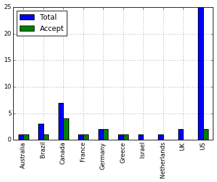
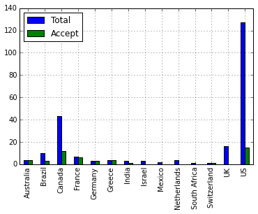
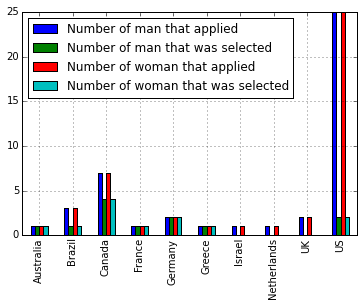

Thanks to all the groups that applied for instructor training that sent great applications. Select the groups was a very difficult tasks because
At the end, we selected the groups lead by
If you have any question or complain about the selection please contact me or our Jonah Duckles, Software Carpentry's Executive Director.
We had applications from 44 groups and we accommodate 12 groups that will be trained by Christina Koch, Fiona Tweedie, Greg Wilson and Steve Crouch.
More than half of the applications come from the US and we couldn't accommodate 1/3 of those applications because half of the trainers are in incompatible time zones.
Canada is the country with more accepted groups because we received application from three very small groups that we merged into one group.In terms of individuals, we were contacted by more than 200 people and we accepted 49 to the instructor training in December.
The two previous graphs are very similar what means that in general the demand for instructor training at each location is the same.
Something that some of our instructors could be interested is in the gender balance of the December Instructor Training.
The source code for the plots are available here as a Jupyter Notebook and the CSV files used on it are available here and here. Both CSV files are a copy of the applications that we receive without names because of privacy concerns.
Note: We forgot to ask the gender to applicants so the numbers at the CSV is just a guess based on their names.